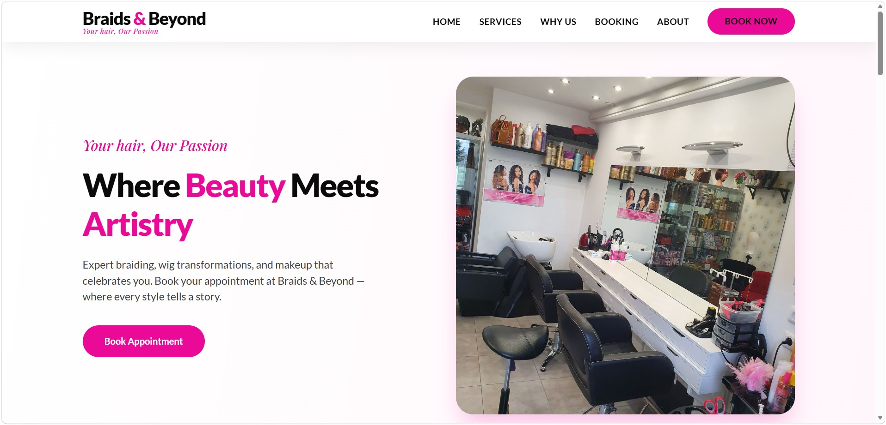
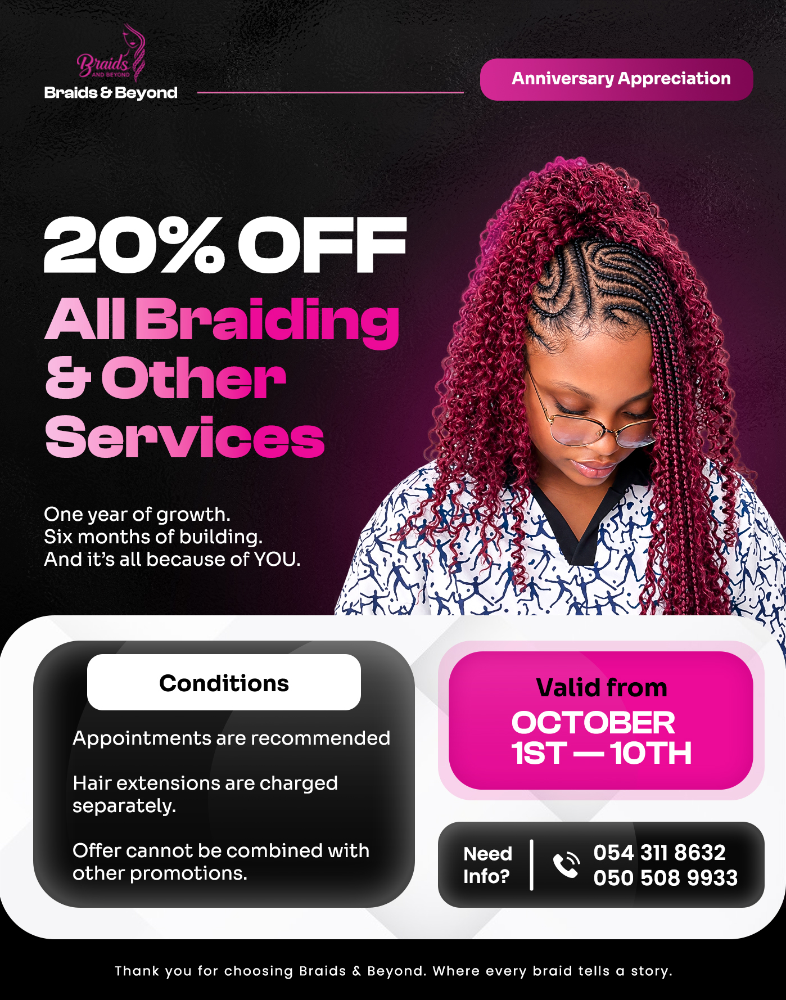
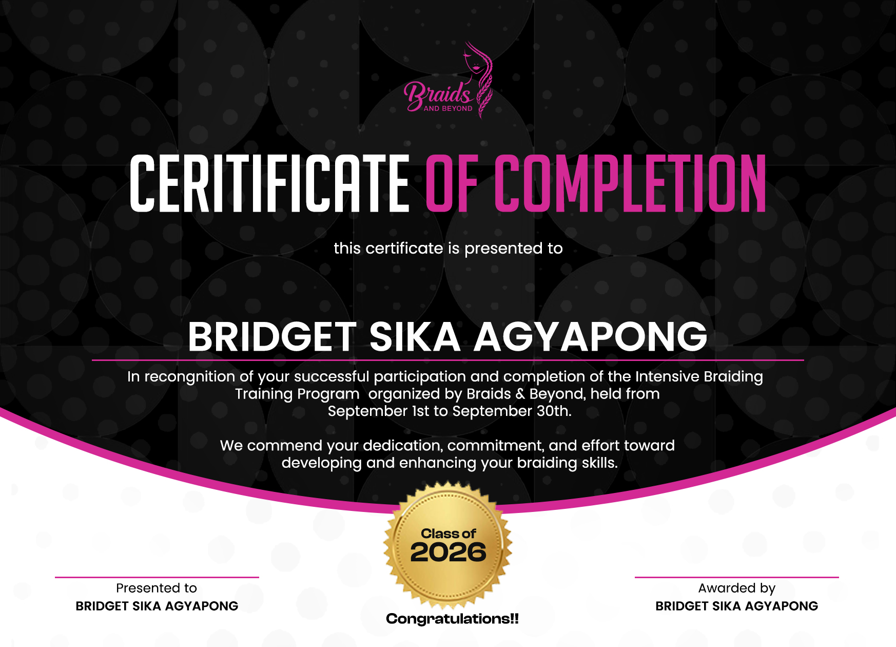

Designing engaging social media content, print collateral, and a booking website for a lifestyle brand.
Braids & Beyond was expanding its services but lacked the marketing materials to match its ambition. The brand needed to look credible and professional across every touchpoint — from printed certificates to a simple online presence.
The challenge: unify the brand across print and digital, create a set of promotional assets that could be reused, and build a lightweight booking website that funnels clients directly to WhatsApp for appointments.
Studied how emotional and relatable design can win clients. I positioned Braids & Beyond to feel modern, confident, and distinct.
Developed a clean, social-first design language and extended it to certificates, and a promo flyer for a cohesive brand experience.
Defined a color palette, typography hierarchy, and layout rules — then built reusable templates so every future asset stays on-brand.
Designed a minimal, mobile-friendly website with a clear appointment form. The form sends a pre-filled WhatsApp message to the client’s DM, turning every enquiry into an instant conversation.
A brand system of certificates, a promo flyer, and a booking website.



The website was designed with a single goal: make booking an appointment effortless. Visitors choose a service, pick a preferred date and time, and click “Book via WhatsApp.” The form automatically opens WhatsApp with a pre-filled message, landing directly in the client’s DM — no back-and-forth, no lost leads.
The client reported stronger engagement on social media, a more professional brand perception, and a significant increase in booking enquiries through the new website. The certificates and promo flyer helped formalise partnerships and in-store promotions.
Core deliverables
Unified brand system
Client approval
More booking enquiries
Let's build something that works as well as it looks.